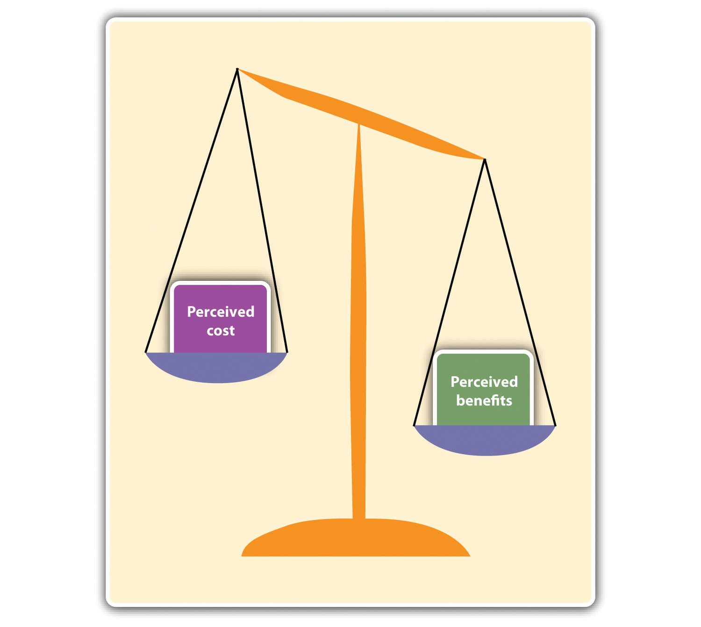
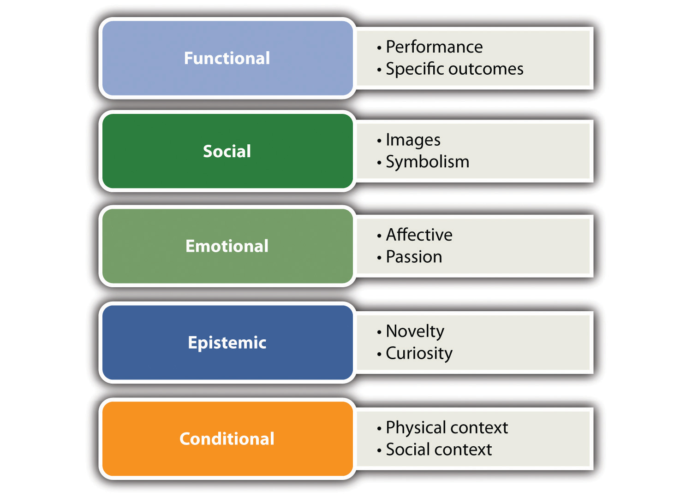
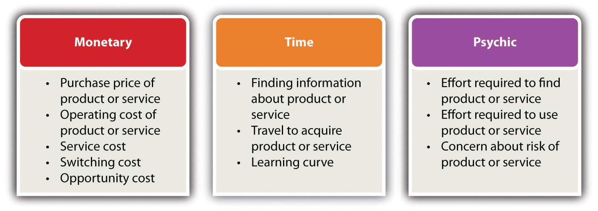
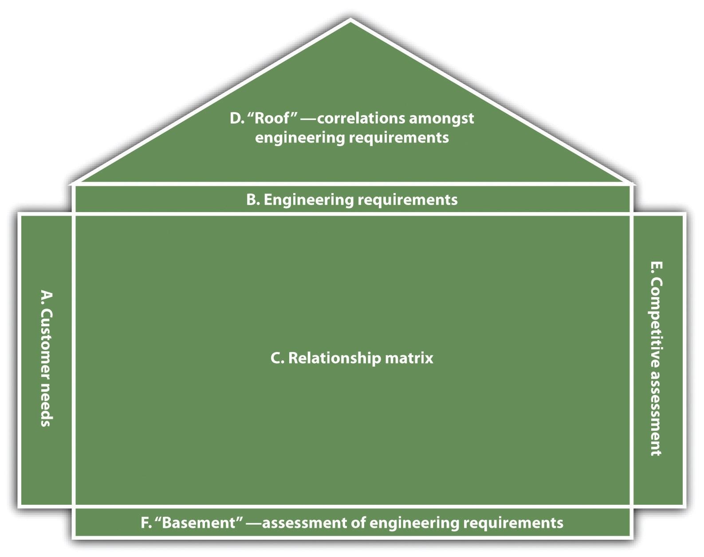
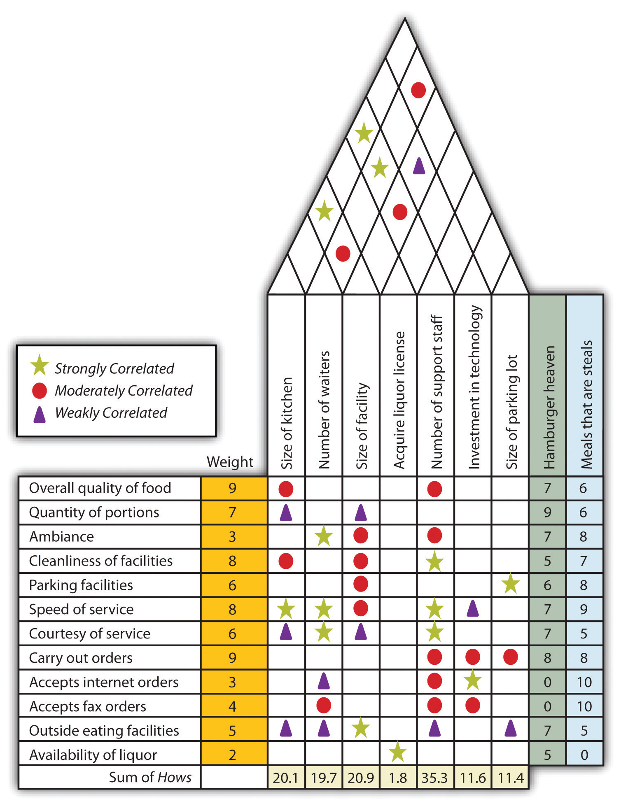
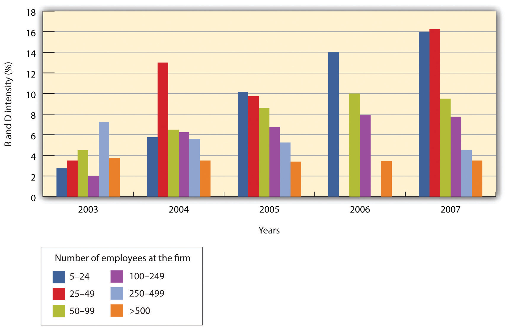
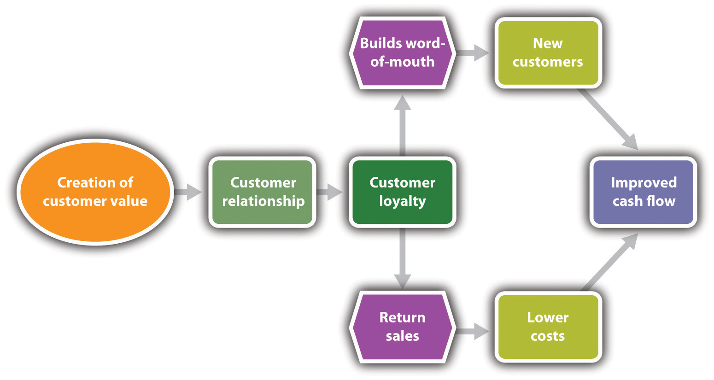

Source: Used with permission from Robert Brown.
Robert Brown has been the owner and operator of the Cheshire Package Store for 25 years. It is one of several liquor stores in this town of 25,000 people. Some of his competitors are smaller or approximately the same size, and one is significantly larger. Robert is very clear in his understanding of what gives his store a competitive edge. He believes his establishment provides the setting that makes a customer feel at home. “My feeling has always been that small businesses must have a feeling of comfort. If your customers do not feel that they can ask you questions about the product or if they feel that they are imposing on you, then they are not likely to return.”
Robert took every opportunity available to better understand his customers and provide them with value. One way his business does this is by developing a personal relationship with its customers. This may mean carefully looking at checks or credit cards, not for security reasons, but to identify customers by name. Robert points out that he always pays careful attention to what customers like and dislike; by doing so, they develop confidence in his suggestions. To foster this confidence, he and his family actively engage their customers in conversations. Customers, Robert, and the employees share stories, which is a key way to build better customer relationships. By listening to his customers, Robert can identify what they are looking for and assist him in knowing what new products he might offer.
In addition to this personalized level of service, the Cheshire Package Store also recognizes the importance of other factors. Robert talks about the importance of maintaining a well-lit store with spacious aisles, making it an inviting place in which to shop. He is careful about even minor details, such as assuring that there are open parking spaces near the entrance to his store. He recognizes that even walking short distances to or from the store might be a burden or deterrent for his customers. Robert’s store possesses a cutting-edge inventory software package designed specifically for liquor stores. It enables him to track inventory levels, which can provide estimates for future inventory levels of different products; however, he sees this as a guide only. As he puts it, “Your knowledge of your customers will be the key determinant for your success.”
Robert also strongly believes that the success of a small business depends on the owner being there. Stores have their own personality, in his view, and that personality is created by the owner. This personality imparted by the owner impacts all operational aspects of the business—“Your employees will pick up on what you expect, and they will know what your customers deserve.”
Look beneath the surface; let not the several qualities of neither the thing, nor its worth escape thee.
Marcus Aurelius Antoninus
In the previous chapter, Peter Drucker and W. Edward Deming placed the customer at the center of their definitions of the purpose of a business. They used the customer as being at the core of that purpose rather than focusing on financial measures such as profit, return on investment (ROI), or shareholders’ wealth. Drucker’s logic was that if a business did not create a sufficient number of customers, there never would be a profit with the business. Deming argued that delighting customers would become the basis for them to consistently return, and loyalty would ensure that the business would have a higher probability of surviving in the long term. The clearest way of doing that is by focusing on providing your customers with a clear sense of value. This emphasis on value will produce economic benefits. Gale Consulting explains the notion of value this way, “If customers don’t get good value from you, they will shop around to find a better deal.”“Why Customer Satisfaction Fails,” Gale Consulting, accessed December 2, 2011, www.galeconsulting.com/index.php?option=com_content&view=article&id= 18&Itemid=23. A recent study put it this way, “These firms have been successful…by consistently creating superior customer valueThe difference between the benefits a customer receives from a product or a service and the costs associated with obtaining the product or the service.—and profiting handsomely from that customer value.”George Day and Christine Moorman, Strategy from the Outside In (New York: McGraw Hill, Kindle Edition, 2010), 104–10.
Strong evidence indicates that this focus on making the customer central to defining the business translates into economic success. It has been estimated that the cost of gaining a new customer over retaining a current customer is a multiple of five. The costs of regaining a dissatisfied customer over the cost of retaining a customer are ten times as much.Forler Massnick, The Customer Is CEO: How to Measure What Your Customers Want—and Make Sure They Get It (New York: Amacom, 1997), 76. So a key question for any business then becomes, “How does one then go about making the customer the center of one’s business?”
It is essential to recognize that value is not just price. Value is a much richer concept. Fundamentally, the notion of customer value is fairly basic and relatively simple to understand; however, implementing this concept can prove to be tremendously challenging. It is a challenge because customer value is highly dynamic and can change for a variety of reasons, including the following: the business may change elements that are important to the customer value calculation, customers’ preferences and perceptions may change over time, and competitors may change what they offer to customers. One author states that the challenge is to “understand the ever changing customer needs and innovate to gratify those needs.”Sudhakar Balachandran, “The Customer Centricity Culture: Drivers for Sustainable Profit,” Course Management 21, no. 6 (2007): 12.
The simple version of the concept of customer value is that individuals evaluate the perceived benefits of some product or service and then compare that with their perceived cost of acquiring that product or service. If the benefits outweigh the cost, the product or the service is then seen as attractive (see Figure 2.1 "Perceived Cost versus Perceived Benefits"). This concept is often expressed as a straightforward equation that measures the difference between these two values:
customer value = perceived benefits − perceived cost.Figure 2.1 Perceived Cost versus Perceived Benefits
Some researchers express this idea of customer value not as a difference but as a ratio of these two factors.M. Christopher, “From Brand Value to Customer Value,” Journal of Marketing Practice: Applied Marketing Science 2, no. 1 (1996): 55. Either way, it needs to be understood that customers do not evaluate these factors in isolation. They evaluate them with respect to their expectations and the competition.
Firms that provide greater customer value relative to their competitors should expect to see higher revenues and superior returns. Robert Buzzell and Bradley Gale, reporting on one finding in the Profit Impact through Marketing Strategy study, a massive research project involving 2,800 businesses, showed that firms with superior customer value outperform their competitors on ROI and market share gains.Robert D. Buzzell and Bradley T. Gale, The PIMS Principles—Linking Strategy to Performance (New York: Free Press, 1987), 106.
Given this importance, it is critical to understand what makes up the perceived benefits and the perceived costs in the eyes of the consumer. These critical issues have produced a considerable body of research. Some of the major themes in customer value are evolving, and there is no universal consensus or agreement on all aspects of defining these two components. First, there are approaches that provide richly detailed and academically flavored definitions; others provide simpler and more practical definitions. These latter definitions tend to be ones that are closer to the aforementioned equation approach, where customers evaluate the benefits they gain from the purchase versus what it costs them to purchase. However, one is still left with the issue of identifying the specific components of these benefits and costs. In looking at the benefits portion of the value equation, most researchers find that customer needs define the benefits component of value. But there still is no consensus as to what specific needs should be considered. Park, Jaworski, and McGinnis (1986) specified three broad types of needs of consumers that determine or impact value.C. Whan Park, Bernard J. Jaworski, and Deborah J. MacInnis, “Strategic Brand Concept Image Management,” Journal of Marketing 50 (1986): 135. Seth, Newman, and Gross (1991)Jagdish N. Seth, Bruce I. Newman, and Barbara L. Gross, Consumption Values and Market Choice: Theory and Applications (Cincinnati, OH: Southwest Publishing, 1991), 77. provided five types of value, as did Woodall (2003), although he did not identify the same five values.Tony Woodall, “Conceptualising ‘Value for the Customer’: An Attributional, Structural and Dispositional Analysis,” Academy of Marketing Science Review 2003, no. 12 (2003), accessed October 7, 2011, www.amsreview.org/articles/woodall12-2003.pdf. To add to the confusion, Heard (1993–94)Ed Heard, “Walking the Talk of Customers Value,” National Productivity Review 11 (1993–94): 21. identified three factors, while Ulaga (2003)Wolfgang Ulaga, “Capturing Value Creation in Business Relationships: A Customer Perspective,” Industrial Marketing Management 32, no. 8 (2003): 677. specified eight categories of value; and Gentile, Spiller, and Noci (2007) mentioned six components of value.Chiara Gentile, Nicola Spiller, and Giuliana Noci, “How to Sustain the Customer Experience: An Overview of Experience Components That Co-Create Value with the Customer,” European Management Journal 25, no. 5 (2007): 395. Smith and Colgate (2007) attempted to place the discussion of customer value in a pragmatic context that might aid practitioners. They identified four types of values and five sources of value. Their purpose was to provide “a foundation for measuring or assessing value creation strategies.”J. Brock Smith and Mark Colgate, “Customer Value Creation: A Practical Framework,” Journal of Marketing Theory and Practice 15, no. 1 (2007): 7. In some of these works, the components or dimensions of value singularly consider the benefits side of the equation, while others incorporate cost dimensions as part of value.
From the standpoint of small businesses, what sense can be made of all this confusion? First, the components of the benefits portion of customer value need to be identified in a way that has significance for small businesses. Second, cost components also need to be identified. Seth, Newman, and Gross’s five types of value provide a solid basis for considering perceived benefits (see Figure 2.2 "Five Types of Value"). Before specifying the five types of value, it is critical to emphasize that a business should not intend to compete on only one type of value. It must consider the mix of values that it will offer its customers. (In discussing these five values, it is important to provide the reader with examples. Most of our examples will relate to small business, but in some cases, good examples will have to be drawn from larger firms because they are better known.)
Figure 2.2 Five Types of Value
The five types of value are as follows:
Conditional valueA basis of value that is derived from a particular context or a sociocultural setting. is derived from a particular context or a sociocultural setting. Many businesses learn to draw on shared traditions, such as holidays. For the vast majority of Americans, Thanksgiving means eating turkey with the family. Supermarkets and grocery stores recognize this and increase their inventory of turkeys and other foods associated with this period of the year. Holidays become a basis for many retail businesses to tap into conditional value.
Another way businesses may think about conditional value is to introduce a focus on emphasizing or creating a sociocultural context. Business may want to introduce a “tribal” element into their customer base, by using efforts that cause customers to view themselves as a member of a special group. Apple Computer does this quite well. Many owners of Apple computers view themselves as a special breed set apart from other computer users. This sense of special identity helps Apple in the sale of its other electronic consumer products. They reinforce this notion in the design and setup of Apple stores. Harley-Davidson does not just sell motorcycles; it sells a lifestyle. Harley-Davidson also has a lucrative side business selling accessories and apparel. The company supports owner groups around the world. All of this reinforces, among its customers, a sense of shared identity.
It should be readily seen that these five sources of value benefits are not rigorously distinct from each other. A notion of aesthetics might be applied, in different ways, across several of these value benefits. It also should be obvious that no business should plan to compete on the basis of only one source of value benefits. Likewise, it may be impossible for many businesses, particularly start-ups, to attempt to use all five dimensions. Each business, after identifying its customer base, must determine its own mix of these value benefits.
As previously pointed out, the notion of perceived customer value has two components—perceived value benefits and perceived value costs. When examining the cost component, customers need to recognize that it is more than just the cost of purchasing a product or a service. Perceived cost should also be seen having multiple dimensions (see Figure 2.3 "Components of Customer Value").
Figure 2.3 Components of Customer Value
Perceived costs can be seen as being monetary, time, and psychic. The monetary componentA component that consists of the purchase, operating, service, switching, and opportunity costs associated with any product or service. of perceived costs should, in turn, be broken down into its constituent elements. Obviously, the first component is the purchase price of the product or the service. Many would mistakenly think that this is the only element to be considered as part of the cost component. They fail to consider several other cost components that are quite often of equal—if not greater—importance to customers. Many customers will consider the operating cost of a product or a service. A television cable company may promote an introductory offer with a very low price for the cable box and its installation. Most customers will consider the monthly fees for cable service rather than just looking at the installation cost. They often use service costs when evaluating the value proposition. Customers have discovered that there are high costs associated with servicing a product. If there are service costs, particularly if they are hidden costs, then customers will find significantly less value from that product or service. Two other costs also need to be considered. Switching cost is associated with moving from one provider to another. In some parts of the country, the cost of heating one’s home with propane gas might be significantly less than using home heating oil on an annualized basis. However, this switch from heating oil to propane would require the homeowner to install a new type of furnace. That cost might deter the homeowner from moving to the cheaper form of energy. Opportunity cost involves selecting among alternative purchases. A customer may be looking at an expensive piece of jewelry that he wishes to buy for his wife. If he buys the jewelry, he may have to forgo the purchase of a new television. The jewelry would then be the opportunity cost for the television; likewise, the television would be the opportunity cost for the piece of jewelry. When considering the cost component of the value equation, businesspeople should view each cost as part of an integrated package to be set forth before customers. More and more car dealerships are trying to win customers by not only lowering the sticker price but also offering low-cost or free maintenance during a significant portion of the lifetime of the vehicle.
These monetary components are what we most often think of when we discuss the term cost, and, of course, they will influence the decision of customers; however, the time componentThe time required to evaluate, acquire, and purchase a product or a service. is also vital to the decision-making process. Customers may have to expend time acquiring information about the nature of the product or the service or make comparisons between competing products and services. Time must be expended to acquire the product or the service. This notion of time would be associated with learning where the product or the service could be purchased. It would include time spent traveling to the location where the item would be purchased or the time it takes to have the item delivered to the customer. One also must consider the time that might be required to learn how to use the product or the service. Any product or service with a steep learning curve might deter customers from purchasing it. Firms can provide additional value by reducing the time component. They could simplify access to the product or the service. They may offer a wide number of locations. Easy-to-understand instructions or simplicity in operations may reduce the amount of time that is required to learn how to properly use the product or the service.
The psychic componentThe element of cost that is associated with factors that might induce stress in a customer. of cost can be associated with those factors that might induce stress on the customer. There can be stress associated with finding or evaluating products and services. In addition, products or services that are difficult to use or require a long time to learn how to use properly can cause stress on customers. Campbell’s soup introduced a meal product called Souper Combos, which consisted of a sandwich and a cup of soup. At face value, one would think that this would be a successful product. Unfortunately, there were problems with the demands that this product placed on the customer in terms of preparing the meal. The frozen soup took twice as long to microwave as anticipated, and the consumer had to repeatedly insert and remove both the soup and the sandwich from the microwave.Calvin L. Hodock, Why Smart Companies Do Dumb Things (Amherst, NY: Prometheus Books, 2007), 65.
In summary, business owners need to constantly consider how they can enhance the benefits component while reducing the cost components of the value equation. Table 2.1 "Components of Perceived Benefit and Perceived Cost" summarizes the subcomponents of perceived value, the types of firms that emphasize those components, and the activities that might be necessary to either enhance benefits or reduce costs.
Table 2.1 Components of Perceived Benefit and Perceived Cost
| Component | Aspects | Activities to Deliver |
|---|---|---|
| Components of Perceived Benefit | ||
| Functional |
|
|
| Social |
|
|
| Emotional |
|
|
| Epistemic |
|
|
| Conditional |
|
|
| Components of Perceived Cost | ||
| Monetary |
|
|
| Time |
|
|
| Psychic |
|
|
Creating Customer Value
(click to see video)Creating value is the essence of a start-up. This video reviews the product and value created by a watch with no hands.
Simple Rules: Three Logics of Value Creation
(click to see video)Three core logics of the value proposition.
Articulating Your Value Proposition
(click to see video)A video on how to better articulate your value proposition. This is informative but very long (about one hour).
It is a cliché to say that people are different; nonetheless, it is true to a certain extent. If all people were totally distinct individuals, the notion of customer value might be an interesting intellectual exercise, but it would be absolutely useless from the standpoint of business because it would be impossible to identify a very unique definition of value for every individual. Fortunately, although people are individuals, they often operate as members of groups that share similar traits, insights, and interests. This notion of customers being members of some type of group becomes the basis of the concept known as market segmentationDividing the market into several portions that are different from each other. It involves recognizing that the market at large is not homogeneous.. This involves dividing the market into several portions that are different from each other.“Market Segmentation,” NetMBA Business Knowledge Center, accessed October 7, 2011, www.netmba.com/marketing/market/segmentation. It simply involves recognizing that the market at large is not homogeneous. There can be several dimensions along which a market may be segmented: geography, demographics, psychographics, or purchasing behavior. Geographic segmentation can be done by global or national region, population size or density, or even climate. Demographic segmentation divides a market on factors such as gender, age, income, ethnicity, or occupation. Psychographic segmentation is carried out on dimensions that reflect differences in personality, opinions, values, or lifestyle. Purchasing behavior can be another basis for segmentation. Differences among customers are determined based on a customer’s usage of the product or the service, the frequency of purchases, the average value of purchases, and the status as a customer—major purchaser, first-time user, or infrequent customer. In the business-to-business (B2B) environment, one might want to segment customers on the basis of the type of company.
Market segmentation recognizes that not all people of the same segment are identical; it facilitates a better understanding of the needs and wants of particular customer groups. This comprehension should enable a business to provide greater customer value. There are several reasons why a small business should be concerned with market segmentation. The main reason centers on providing better customer value. This may be the main source of competitive advantage for a small business over its larger rivals. Segmentation may also indicate that a small business should focus on particular subsets of customers. Not all customers are equally attractive. Some customers may be the source of most of the profits of a business, while others may represent a net loss to a business. The requirements for providing value to a first-time buyer may differ significantly from the value notions for long time, valued customer. A failure to recognize differences among customers may lead to significant waste of resources and might even be a threat to the very existence of a firm.
Tom Peters: The Biggest Underserved Markets
(click to see video)Tom Peters, a self-described “professional loudmouth” who has been compared to Ralph Waldo Emerson, Walt Whitman, Henry David Thoreau, and H. L. (Henry Louis) Mencken, declares war on the worthless rules and absurd organizational barriers that stand in the way of creativity and success. In a totally outrageous, in-your-face presentation, Peters reveals the following: a reimagining of American business; two big markets—underserved and worth trillions; the top qualities of leadership excellence; and why passion, talent, and action must rule business today.
Frank’s All-American BarBeQue
Robert Rainsford is a twenty-eight-year-old facing a major turning point in his life. He has found himself unemployed for the first time since he was fifteen years old. Robert holds a BS degree in marketing from the University of Rhode Island. After graduation, a firm that specialized in developing web presences for other companies hired him. He worked for that firm for the last seven years in New York City. Robert rose rapidly through the company’s ranks, eventually becoming one of the firm’s vice presidents. Unfortunately, during the last recession, the firm suffered significant losses and engaged in extensive downsizing, so Robert lost his job. He spent months looking for a comparable position, yet even with an excellent résumé, nothing seemed to be on the horizon. Not wanting to exhaust his savings and finding it impossible to maintain a low-cost residence in New York City, he returned to his hometown in Fairfield, Connecticut, a suburban community not too far from the New York state border.
He found a small apartment near his parents. As a stopgap measure, he went back to work with his father, who is the owner of a restaurant—Frank’s All-American BarBeQue. His father, Frank, started the restaurant in 1972. It is a midsize restaurant—with about eighty seats—that Frank has built up into a relatively successful and locally well-known enterprise. The restaurant has been at its present location since the early 1980s. It shares a parking lot with several other stores in the small mall where it is located. The restaurant places an emphasis on featuring the food and had a highly simplified décor, where tables are covered with butcher paper rather than linen tablecloths. Robert’s father has won many awards at regional and national barbecue cook-offs, which is unusual for a business in New England. He has won for both his barbecue food and his sauces. The restaurant has been repeatedly written up in the local and New York papers for the quality of its food and the four special Frank’s All-American BarBeQue sauces. The four sauces correspond to America’s four styles of barbecue—Texan, Memphis, Kansas City, and Carolina. In the last few years, Frank had sold small lots of these sauces in the local supermarket.
As a teenager, Robert, along with his older sister Susan, worked in his father’s restaurant. During summer vacations while attending college, he continued to work in the restaurant. Robert had never anticipated working full-time in the family business, even though he knew his father had hoped that he would do so. By the time he returned to his hometown, his father had accepted that neither Robert nor Susan would be interested in taking over the family business. In fact, Frank had started to think about selling the business and retiring. However, Robert concluded that his situation called for what he saw as desperate measures.
Initially, Robert thought his employment at his father’s business was a temporary measure while he continued his job search. Interestingly, within the first few weeks he returned to the business, he felt that he could bring his expertise in marketing—particularly his web marketing focus—to his father’s business. Robert became very enthusiastic about the possibility of fully participating in the family business. He thought about either expanding the size of the restaurant, adding a takeout option, or creating other locations outside his hometown. Robert looked at the possibility of securing a much larger site within his hometown to expand the restaurant’s operations. He began to scout surrounding communities for possible locations. He also began to map out a program to effectively use the web to market Frank’s All-American BarBeQue sauce and, in fact, to build it up to a whole new level of operational sophistication in marketing.
Robert recognized that the restaurant was as much of a child to his father as he and his sister were. He knew that if he were to approach his father with his ideas concerning expanding Frank’s All-American BarBeQue, he would have to think very carefully about the options and proposals he would present to his father. Frank’s All-American BarBeQue was one of many restaurants in Fairfield, but it is the only one that specializes in barbecue. Given the turnover in restaurants, it was amazing that Frank had been able to not only survive but also prosper. Robert recognized that his father was obviously doing something right. As a teenager, he would always hear his father saying the restaurant’s success was based on “giving people great simple food at a reasonable price in a place where they feel comfortable.” He wanted to make sure that the proposals he would present to his father would not destroy Frank’s recipe for success.
The perceived value proposition offers a significant challenge to any business. It requires that a business have a fairly complete understanding of the customer’s perception of benefits and costs. Although market segmentation may help a business better understand some segments of the market, the challenge is still getting to understand the customer. In many cases, customers themselves may have difficulty in clearly understanding what they perceive as the benefits and costs of any offer. How then is a business, particularly a small business, to identify this vital requirement? The simple answer is that a business must be open to every opportunity to listen to the voice of the customer (VOC)Any and all attempts to identify the real wants and needs of a customer.. This may involve actively talking to your customers on a one-to-one basis, as illustrated by Robert Brown, the small business owner highlighted at the beginning of this chapter. It may involve other methods of soliciting feedback from your customers, such as satisfaction surveys or using the company’s website. Businesses may engage in market research projects to better understand their customers or evaluate proposed new products and services. Regardless of what mechanism is used, it should serve one purpose—to better understand the needs and wants of your customers.
Robin Lawton—Voice of the Customer—What Do Customers Value?
(click to see video)International Management Technologies introduces Robin Lawton on the topic of “What Do Customers Value?”
Robin Lawton—Voice of the Customer—Basis for Satisfaction Keynote
(click to see video)The customer-centered organization begins the transformation process by understanding how to uncover and understand the VOC.
Chapter 6 "Marketing Basics" of this text will focus on the topic of marketing for small business. Naturally, it will include significant materials on the subject of market research. In this section, the focus will be on how a business may gain better insight into what constitutes the benefits and the costs for particular customers. It will take a broad view and leave the details of market research for Chapter 6 "Marketing Basics".
Good research in the area of customer value simply means that one must stop talking to the customer—talking through displays, advertising, and/or a website. It means that one is always open to listening carefully to the VOC. Active listening in the service of better identifying customer value means that one is always open to the question of how your business can better solve the problems of particular customers.
If businesses are to become better listeners, what should they be listening for? What types of questions should they be asking their customers? Businesses should address the following questions when they attempt to make customer value the focus of their existence:
At the beginning of this chapter, it was argued that your central focus must be the customer. One critical way that this might be achieved is by providing a customer with superior value. However, creating this value must be done in a way that assures that the business makes money. One way of doing this is by identifying and selecting those customers who will be profitable. Some have put forth the concept of customer lifetime valueA measure of the revenue generated by a customer, the cost generated for that particular customer, and the projected retention rate of that customer over his or her lifetime., a measure of the revenue generated by a customer, the cost generated for that particular customer, and the projected retention rate of that customer over his or her lifetime.Jack Schmid, “How Much Are Your Customers Worth?,” Catalog Age 18, no. 3 (2001): 63.,Jonathon Lee and Lawrence Feick, “Cooperating Word-of-Mouth Affection Estimating Customer Lifetime Value,” Journal of Database Marketing and Customer Strategy Management 14 (2006): 29.
This concept is popular enough that there are lifetime value calculator templates available on the web. The Harvard Business School created the calculator used in Exercise 2.1. It looks at the cost of acquiring a customer and then computes the net present valueA value that discounts the value of future cash flows. It recognizes the time value of money. of the customer during his or her lifetime. Net present value discounts the value of future cash flows. It recognizes the time value of money. You can use one of two models: a simple model that examines a single product or a more complex model with additional variables. One of the great benefits in conducting customer lifetime value analysis is combining it with the notion of market segmentation. The use of market segmentation allows for recognizing that certain classes of customers may produce significantly different profits during their lifetimes. Not all customers are the same.
Let us look at a simple case of segmentation based on behavioral factors. Some customers make more frequent purchases; these loyal customers may generate a disproportionate contribution of a firm’s overall profit. It has been estimated that only 15 percent of American customers have loyalty to a single retailer, yet these customers generate between 55 percent and 70 percent of retail sales.“Loyalty Promotions,” Little & King Integrated Marketing Group, accessed December 5, 2011, www.littleandking.com/white_papers/loyalty_promotions.pdf. Likewise, a lifetime-based economic analysis of different customer segments may show that certain groups of customers actually cost more than the revenues that they generate.
Having segmented your customers, you will probably find that some require more handholding during and after the sale. Some customer groups may need you to “tailor” your product or service to their needs.“Determining Your Customer Perspective—Can You Satisfy These Customer Segments?,” Business901.com, accessed October 8, 2011, business901.com/blog1/determining-your-customer-perspective-can-you-satisfy-these-customer-segments. As previously mentioned, market segmentation can be done along several dimensions. Today, some firms use data mining to determine the basis of segmentation, but that often requires extensive databases, software, and statisticians. One simple way to segment your customers is the customer value matrix that is well suited for small retail and service businesses. It uses just three variables: recency, frequency, and monetary value. Its data requirements are basic. It needs customer identification, the date of purchase, and the total amount of purchase. This enables one to easily calculate the average purchase amount of each customer. From this, you can create programs that reach out to particular segments.Claudio Marcus, “A Practical yet Meaningful Approach to Customer Segmentation,” Journal of Consumer Marketing 15, no. 5 (1998): 494.
Customer Lifetime Value
(click to see video)Jack Daly presents the “client for life” concept, featuring Continuity Programs BCL programs of customer loyalty outsourced service.
Lifetime Customer Value
(click to see video)Patrick McTigue explains how critical the lifetime value of a customer is to your business. He covers some tips to integrate superb customer service into your business model.
The role of market research was already discussed in this chapter. For many small businesses, particularly very small businesses, formal market research may pose a problem. In many small businesses, there may be a conflict between decision making made on a professional basis and decision making made on an instinctual basis.Malcolm Goodman, “The Pursuit of Value through Qualitative Market Research,” Qualitative Market Research: An International Journal 2, no. 2 (1999): 111. Some small business owners will always decide based on a gut instinct. We can point to many instances in which gut instinct concerning the possible success in product paid off, whereas a formal market research evaluation might consider the product to be a nonstarter.
In 1975, California salesman Gary Dahl came up with the idea of the ideal pet—a pet that would require minimal care and cost to maintain. He developed the idea of the pet rock. This unlikely concept became a fad and a great success for Dahl. Ken Hakuta, also known as Dr. Fad, developed a toy known as the Wallwalker in 1983. It sold over 240 million units.“What Are Wacky WallWalkers?,” DrFad.com, accessed December 2, 2011, www.drfad.com/fad_facts/wallwalker.htm. These and other fad products, such as the Cabbage Patch dolls and Rubik’s Cube, are so peculiar that one would be hard pressed to think of any marketing research that would have indicated that they would be viable, let alone major successes.
Sometimes it is an issue of having a product idea and knowing where the correct market for the product will be. Jill Litwin created Peas a Pie Pizza, which is a natural food pizza pie with vegetables baked in the crust. She knew that the best place to market her unique product would be in the San Francisco area with its appreciation of organic foods.Susan Smith Hendrickson, “Mining Her Peas and Carrots Wins Investors,” Mississippi Business Journal 32, no. 21 (2010): S4.
This notion of going with one’s gut instinct is not limited to fad products. Think of the birth of Apple Computer. The objective situation was dealing with a company whose two major executives were college dropouts. The business was operating out of the garage of the mother of one of these two executives. They were producing a product that up to that point had only a limited number of hobbyists as a market. None of this would add up to very attractive prospect for investment. You could easily envision a venture capitalist considering a possible investment asking for a market research study that would identify the target market(s) for its computers. None existed at the company’s birth. Even today, there is a strong indication that Apple does not rely heavily on formal marketing research. As Steve Jobs put it,
It’s not about pop culture, it’s not about fooling people, and it’s not about convincing people that they want something they don’t. We figure out what we want. And I think we’re pretty good at having the right discipline to think through whether a lot of other people are going to want it, too. That’s what we get paid to do. So you can’t go out and ask people, you know, what’s the next big [thing.] There is a great quote by Henry Ford, right? He said, “If I had asked my customers what they wanted, they would’ve told me ‘A faster horse.’”Alain Breillatt, “You Can’t Innovate Like Apple,” Pragmatic Marketing 6, no. 4, accessed October 8, 2011, www.pragmaticmarketing.com/publications/magazine/6/4/you_cant_innovate_like_apple.
Quality function deployment (QFD)An approach that takes the concept of the VOC seriously and uses it to help design new products and services or to improve existing ones. It takes the desires of consumers and explores how well the individual activities of the business are meeting those desires. is an approach that is meant to take the VOC concept seriously and uses it to help design new products and services or improve existing ones. It is an approach that was initially developed in Japan for manufacturing applications. It seeks “to transform user demands into design quality, to deploy the functions forming quality, and to deploy methods for achieving the design quality into subsystems and component parts, and ultimately to specific elements.”Yoji Akao, Quality Function Deployment: Integrating Customer Requirements into Product Design (New York: Productivity Press, 1990), 17. To put it more clearly, QFD takes the desires of consumers and explores how well the individual activities of the business are meeting those desires. It also considers how company activities interact with each other and how well the company is meeting those customer desires with respect to the competition. It achieves all these ends through the means of a schematic; see Figure 2.4 "House of Quality", which is known as the house of quality. The schematic provides the backbone for the entire QFD process. A comprehensive design process may use several houses of quality, moving from the first house, which concentrates on the initial specification of customer desires, all the way down to developing a house that focuses on the specification for parts or processes. Any house is composed of several components:
Figure 2.4 House of Quality
Although it might initially appear to be complex, QFD provides many benefits, including the following: (1) reduces time and effort during the design phase, (2) reduces alterations in design, (3) reduces the entire development time, (4) reduces the probability of inept design, (5) assists in team development, and (6) helps achieve common consensus.Gerson Tontini, “Deployment of Customer Needs in the QFD Using a Modified Kano Model,” Journal of the Academy of Business and Economics 2, no. 1 (2003).
Unfortunately, QFD is most often associated with manufacturing. Few realize that it has found wide acceptance in many other areas—software development, services, education, amusement parks, restaurants, and food services. (For examples of these applications of QFD, go to http://www.mazur.net/publishe.htm.) Further, company size should not be seen as a limitation to its possible application. The QFD approach, in a simplified form, can be easily and successfully used by any business regardless of its size.Glen Mazur, “QFD for Small Business: A Shortcut through the Maze of Matrices” (paper presented at the Sixth Symposium on Quality Function Deployment, Novi, MI, June 1994). Its visual nature makes it extremely easy to comprehend, and it can convey to all members of the business the relative importance of the elements and what they do to help meet customers’ expectations. Figure 2.5 "Simplified House of Quality for a Restaurant" illustrates this by providing a simplified house of quality chart for a restaurant.
Figure 2.5 Simplified House of Quality for a Restaurant
Quality Function Deployment Tutorial
(click to see video)This gives a brief overview of QFD.
Some companies provide Excel-based software that can assist in conducting a QFD analysis. This shows a template in the QI Macros software to help structure your thinking, making sure nothing is left out. For more information and to download a 30-day trial of the QI Macros, including the QFD template, see www.qimacros.com/six-sigma-articles.html.
Although some succeed by listening to their instincts—their inner voices—it is highly advisable to all businesses to be proactive in trying to listen to the VOC. Listening to the customer is the domain of market research. However, it should not be surprising that many small businesses have severe resource constraints that make it difficult for them to use complex and sophisticated marketing and market research approaches.David Carson, Stanley Cromie, Pauric McGowan, Jimmy Hill, Marketing and Entrepreneurship in Small and Midsize Enterprises (Hemel Hempstead, UK: Prentice-Hall, 1995), 108. To some extent, this is changing with the introduction of powerful, yet relatively low cost, web-based tools and social media. These will be discussed in greater detail in Section 2.4.2 "Digital Technology and E-Environment Implications" of this chapter. Another restriction that a small business may face in the area of marketing is that the owner’s marketing skills and knowledge may not be very extensive. The owners of such firms may opt for several types of solutions. They may try to mimic the marketing techniques employed by larger organizations, drawing on what was just mentioned. They may opt for sophisticated but easy to use analytical tools, or they may just simply take marketing tools and techniques and apply them to the small business environment.Malcolm Goodman, “The Pursuit of Value through Qualitative Market Research,” Qualitative Market Research: An International Journal 2, no. 2 (1999): 111.
The most basic and obvious way to listen to customers is by talking to them. All businesses should support programs in which employees talk to customers and then record what they have to say about the product or the service. It is important to centralize these observations.
Other ways of listening to customers are through comment cards and paper and online surveys. These approaches have their strengths and limitations (see Note 2.31 "Video Clip 2.11"). Regardless of these limitations, they do provide an insight into your customers. Another way one can gather information about customers is through loyalty programs. Loyalty programs are used by 81 percent of US households.Shallee Fitzgerald, “It’s in the Cards,” Canadian Grocer 118, no. 10 (2004/2005): 30. Social media options—see Section 2.4.2 "Digital Technology and E-Environment Implications"—offer a tremendous opportunity to not only listen to your customer but also engage in an active dialog that can build a sustainable relationship with customers.
Listen to Your Customers and Express How Much You Care
(click to see video)This video details how easy and simple it is to show that you listen to your customers and care about them.
Ask, Listen, and Retain Video #4: Listening and Analyzing What Your Customers Say?
(click to see video)This is the fourth in a series of videos on listening to customers. This video covers how to analyze any disengaged or disgruntled customers. Once a customer is identified, our process ensures that action is taken to reengage the customer by dealing with the concerns at hand. But most importantly, the process encourages the development of a relationship between the customer and branch level management.
Cisco Website for Innovation
A web forum for small businesses to share information: communities.cisco.com/community/technology/collaboration/business/blog/tags/innovation.
The Harvard Business School provides an online customer lifetime value calculator at hbsp.harvard.edu/multimedia/flashtools/cltv/index.html. You provide some key values, and it computes the net present value of customer purchases. Go to the site and use the following data. What impact does changing the customer retention have on the value of the customer?
| Average spent per purchase | $250.00 |
| Average number of purchases per period | 4 |
| Direct marketing cost per period per year | $30 |
| Average gross margin | 20% |
| Average retention rate | 25%, 35%, 50%, 70%, 80%, and 90% |
| Annual discount rate | 10% |
Small businesses have always been a driver of new products and services. Many products and inventions that we might commonly associate with large businesses were originally created by small businesses, including air-conditioners, Bakelite, the FM radio, the gyrocompass, the high resolution computed axial tomography scanner, the outboard engine, the pacemaker, the personal computer, frozen food, the safety razor, soft contact lenses, and the zipper.Jerry Katz and Richard Green, Entrepreneurial Small Business, 2nd ed. (New York: McGraw-Hill, 2009), 17. This creativity and innovative capability probably stems from the fact that smaller businesses, which may lack extensive financial resources, bureaucratic restraints, or physical resources, may find a competitive edge by providing customers value by offering new products and services. It is therefore important to consider how small businesses can foster a commitment to creativity and innovation.
One way smaller firms may compete with their larger rivals is by being better at the process of innovation, which involves creating something that is new and different. It need not be limited to the creation of new products and services. InnovationNew ways in which a product or a service might be used, new ways of packaging a product or a service, or identifying new customers or new ways to reach customers. can involve new ways in which a product or a service might be used. It can involve new ways of packaging a product or a service. Innovation can be associated with identifying new customers or new ways to reach customers. To put it simply, innovation centers on finding new ways to provide customer value.
Although some would argue that there is a difference between creativity and innovation (see Note 2.38 "Video Clip 2.13"), one would be hard pressed to argue that creativity is not required to produce innovative means of constructing customer value. An entire chapter, even an entire book, could be devoted to fostering creativity in a small business. This text will take a different track; it will look at those factors that might inhibit or kill creativity. Alexander Hiam (1998) identified nine factors that can impede the creative mind-set in organizations:Alexander Hiam, Creativity (Amherst, MA: HRD Press, 1998), 6.
One of the great mistakes associated with the concept of innovation is that innovation must be limited to highly creative individuals and organizations with large research and development (R&D) facilities.“Innovation Overload,” Trendwatching.com, accessed December 2, 2011, trendwatching.com/trends/pdf/2006_08_innovation_overload.pdf. The organization’s size may have no bearing on its ability to produce new products and services. More than a decade ago, studies began to indicate that small manufacturing firms far exceeded their larger counterparts with respect to the number of innovations per employee.A. Roy Thurik, “Introduction: Innovation in Small Business,” Small Business Economics 8 (1996): 175.
A more recent study, which covered the period from 2003 to 2007, showed that R&D performance by small US companies grew slightly faster than the comparable performance measures for larger US firms. During that period, small firms increased their R&D spending by more than 40 percent, compared to an approximate 33 percent increase for large companies. These smaller firms also increased their employment of scientists and engineers at a rate approximately 75 percent greater than larger companies. Further, the results of this study, which are presented in Figure 2.6 "R&D Intensity by Firm Size", illustrate that particularly since 2004, smaller businesses have outpaced their larger rivals with respect to R&D intensity. The term R&D intensity refers to the current dollars spent on R&D divided by a company’s reported sales revenue.L. Rausch, “Indicators of U.S. Small Business’s Role in R&D,” National Science Foundation (Info Brief NSF 10–304), March 2010.
Figure 2.6 R&D Intensity by Firm Size
It cannot be over emphasized that innovation should not be limited to the creation of products or services. The following are just a few examples of innovation beyond the development of new products:
Vijay Govindarajan: Innovation Is Not Creativity
(click to see video)An interview with Vijay Govindarajan on the difference between creativity and innovation.
Where Good Ideas Come From
(click to see video)This cartoon was developed for Steven Johnson’s book on innovation. He concluded that with today’s tools and environment, radical innovation is extraordinarily accessible to those who know how to cultivate it. Where Good Ideas Come From is essential reading for anyone who wants to know how to come up with tomorrow’s great ideas.
Steven Johnson: Where Good Ideas Come From
(click to see video)This relatively long presentation (eighteen minutes) by Steven Johnson maps out the ideas presented in his book.
Encouraging Innovation with Employees: Innovators Forum Guest Danika Davis
(click to see video)Danika Davis, Innovators Forum guest and CEO of the Northern California Human Resources Association, discusses the ways to reward innovation among employees and how to foster innovation in your small business. Discuss this and other topics at http://blogs.cisco.com/category/smallbusiness.
Creating an Innovation Mind-set
(click to see video)Vijay Govindarajan discusses that to create an innovation mind-set, managers must bring in fresh voices from outside the company, encourage collaboration, and consider how emerging market needs can spur ideas for innovative offerings.
Tom Peters: Innovation Is Actually Easy!
(click to see video)Tom Peters declares war on the worthless rules and absurd organizational barriers that stand in the way of creativity and success.
How to Spot Disruptive Innovation Opportunities
(click to see video)Disruptive innovation occurs when an innovator brings something to market that is simple, convenient, accessible, and affordable. Here are some tips to help you pinpoint disruptive opportunities within your organization.
Not all businesses have to concern themselves with social and consumer trends. Some businesses, and this would include many small businesses, operate in a relatively stable environment and provide a standard good or service. The local luncheonette is expected to provide standard fare on its menu. The men’s haberdasher will be expected to provide mainline men’s clothing. However, some businesses, particularly smaller businesses, could greatly benefit by recognizing an emerging social or consumer trend. Small businesses that focus on niche markets can gain sales if they can readily identify new social and consumer trends.
Trends differ from fads. Fads may delight customers, but by their very nature, they have a short shelf life. Trends, on the other hand, may be a portend of the future.MakinBacon, “Why and How to Identify Real Trends,” HubPages, accessed October 8, 2011, hubpages.com/hub/trendsanalysisforsuccess. Smaller businesses may be in a position to better exploit trends. Their smaller size can give them greater flexibility; because they lack an extensive bureaucratic structure, they may be able to move with greater rapidity. The great challenge for small businesses is to be able to correctly identify these trends in a timely fashion. In the past, businesses had to rely on polling institutes for market research as a way of attempting to identify social trends. Harris Interactive produced a survey about the obesity epidemic in America. This study showed that the vast majority of Americans over the age of 25 are overweight. The percentage of those overweight has steadily increased since the early 1980s. The study also indicated that a majority of these people desired to lose weight. This information could be taken by the neighborhood gym, which could then create specialized weight-loss programs. Recognizing this trend could lead to a number of different products and services.“Identifying and Understanding Trends in the Marketing Environment,” BrainMass, accessed June 1, 2012, http://www.brainmass.com/library/viewposting.php?posting_id=51965.
In the past, the major challenge for smaller businesses to identify or track trends was the expense. These firms would have to use extensive market research or clipping services. Today, many of those capabilities can be provided online, either at no cost or a nominal cost.Rocky Fu, “10 Excellent Online Tools to Identify Trends,” Rocky FU Social Media & Digital Strategies, May 9, 2001, accessed October 8, 2011, www.rockyfu.com/blog/10-excellent-online-tools-to-identify-trends. Google Trends tracks how often a particular topic has been searched on Google for a particular time horizon. The system also allows you to track multiple topics, and it can be refined so that you can examine particular regions with these topics searched. The data are presented in graphical format that makes it easy to determine the existence of any particular trends. Google Checkout Trends monitors the sales of different products by brand. One could use this to determine if seasonality exists for any particular product type. Microsoft’s AdCenter Labs offers two products that could be useful in tracking trends. One tool—Search Volume—tracks searches and also provides forecasts. Microsoft’s second tool—Keyword Forecast—provides data on actual searches and breaks it down by key demographics. Facebook provides a tool called Lexicon. It tracks Facebook’s communities’ interests. (Check out the Unofficial Facebook Lexicon Blog for a description on how to fully use Lexicon.) The tool Twist tracks Twitter posts by subject areas. Trendpedia will identify articles online that refer to particular subject areas. These data can be presented as a trend line so that one can see the extent of public interest over time. The trend line is limited to the past three months. Trendrr tracks trends and is a great site for examining the existence of trends in many areas.
Online technology now provides even the smallest business with the opportunity to monitor and detect trends that can be translated into more successful business ventures.
In Chapter 1 "Foundations for Small Business", customer value, cash flow, and digital technology and the e-environment were compared to various parts of the human body and overall health. This analogy was made because these themes are viewed as essential to the survival of any small business in the twenty-first century. Individually, these threads may not ensure survival, but taken together, the probability of surviving and prospering increases tremendously. Their importance is so great for a twenty-first century enterprise that they are not only embedded in each chapter but also highlighted in each chapter. Throughout the text, each chapter’s topic will be reviewed through the prism of these three threads.
The entire thrust of this chapter has been on the topic of customer value. The essence of the argument presented in this chapter has been that any business that fails to provide perceived customer value is a business that will probably fail.
It is not that difficult to envision how the successful creation of customer value can significantly enhance a firm’s cash flow (see Figure 2.7 "Superior Cash Flow as a Result of Superior Customer Value"). Firms that are successful in correctly identifying the sources of value should be able to provide superior customer value. This may produce a direct relationship with their customers. These relationships produce a back-and-forth flow of information that should enable the business to further enhance its ability to provide customer value. A successful relationship enhances the probability of customer loyalty, hopefully building a strong enough relationship to produce a customer for life.
Customer loyalty can have several positive outcomes. Loyalty will result in increased sales from particular customers. This does more than generate additional revenue; as the business comes to better understand its loyal customers, the cost of serving those customers will decrease. Increased sales, with declining costs, translate into a significant boost in cash flow. Customer loyalty also has the benefit of generating positive word-of-mouth support for a business. Word-of-mouth advertising can be one of the most powerful forms of advertising and can be seen as a form of free advertising. It has been estimated that word-of-mouth advertising is the primary factor in 20–50 percent of all purchasing decisions. A study by the US office of consumer affairs (formally known as the Federal Trade Commission) indicated that satisfied customers are likely to tell five other customers about their positive experiences.James L. Heskitt, W. Earl Sasser, and Leonard A. Schlesinger, The Service Profit Chain (New York: Free Press, 1997): 88. It is particularly powerful in the case of first-time buyers or with expensive items and those items that require extensive research before purchase.Colette Weil, “Word-of-Mouth Marketing,” Home Care Magazine 33, no. 1 (2010): 49. Positive word-of-mouth advertising coming from loyal customers can generate additional sales, which in turn enhances cash flow. The creation of superior customer value combined with an intelligent cost control system inevitably produces superior cash flow.
Figure 2.7 Superior Cash Flow as a Result of Superior Customer Value
In the last decade, firms desiring to better understand the customer’s notion of perceived value relied on customer relationship management (CRM) software. Customer relationship managementA service approach that hopes to build a long-term and sustainable relationship with customers that has value for both the customer and the company. refers to a service approach that hopes to build a long-term and sustainable relationship with customers that has value for both the customer and the company. It is a generic term covering different software and browser applications that collect information about customers and organize it in a way that may be used effectively by management. This term will be referred to repeatedly throughout this text. CRM can assist small businesses with respect to customer value in the following ways:“CRM (Customer Relationship Management,” About.com, accessed October 8, 2011, sbinfocanada.about.com/cs/marketing/g/crm.htm.
Although originally designed for large corporations with large budgets, CRM is now available to many firms in the small business environment. In addition to being expensive, original fees-first CRM packages were far too complex for small businesses.Maria Verlengia, “CRM for the Small Business, Part 1: When Is It Time to Invest?,” CRMBuyer, February 16, 2010, accessed October 8, 2011, www.crmbuyer.com/story/69349.html. Now there are many CRM packages that are specifically dedicated to the small business environment.
To maximize the benefits of the CRM package, several factors should be considered. Small businesses should have a clear idea as to their requirements for the CRM solution. Some questions that should be considered are as follows:Maria Verlengia, “CRM for the Small Business, Part 2: Choosing the right CRM Tool,” CRMBuyer, February 23, 2010, accessed October 8, 2011, www.crmbuyer.com/story/69402.html.
In some ways, integrating the CRM package may be easier in the small business than in large business because you can overcome some bureaucratic hurdles. However, you must always recognize that the successful implementation of any software package is highly dependent on your employees.Maria Verlengia, “CRM for the Small Business, Part 4: Getting the New System Up and Running,” CRMBuyer, March 9, 2010, accessed October 8, 2011, www.crmbuyer.com/story/69502.html%22.
Perhaps the greatest incentive for small businesses to adopt CRM packages is the advent of cloud computing. Cloud computingThe situation in which vendor software does not reside on the computer system of a small business., also known as SaaS (software as a service), refers to the situation in which vendor software does not reside on the computer system of a small business.“Great Customer Relations Management Tools,” St. Germane, accessed June 1, 2012, http://www.stgermaine.ca/great-crm-customer-relationship-management-tools/. All aspects of the system, from maintenance to backups, are the responsibility of the vendor. This minimizes the need for computing capability by the small business. Cloud computing can significantly reduce the course of acquiring and maintaining such computer programs.
The failure to accurately understand a customer’s notion of perceived value is the surest recipe for complete disaster. This may be a large requirement because in many cases customers may be quite unsure about their own notion of value or have difficulty in explicitly articulating that notion. One would think that larger firms—those with much greater resources—would be in a better position to clearly identify their customers’ notion of value. This does not seem to be the case, however, with all large firms. Even they may stumble in attempting to develop products and services that they believe will meet their customers’ concept of value. In this feature, several noticeable product failures are identified. Almost every failure came from a large corporation. This is because we are much more familiar with the failures of large corporations that invest considerable time and effort into the introduction of new products and services. There is far less press given to the failures of small businesses that misread or misunderstand their customers’ notion of perceived value.
When Your Notion of Value Is Not the Same as Your Customer’s
Perhaps the most famous company failure to adequately gauge customers’ notion of value revolved around the introduction of New Coke. In 1985, Coca-Cola was under great pressure, losing market share to its major rival, Pepsi. In an effort to recapture market share, particularly among the younger segment of the market, Coca-Cola initiated one of the largest market research projects of its time. It conducted extensive taste tests throughout the nation and investigated the possibility of introducing a new formula for Coke. The results from the taste tests were positively skewed toward a sweeter version. There was some debate whether this should be an additional option to the Coke line of products or whether it should replace the standard formula for Coke. Although there were some negative indications about this new formula from focus groups, Coke decided to begin a major introduction of New Coke, but it was universally considered a major disaster. Public reaction, particularly in the South, was very negative toward New Coke. A lot of this negative reaction stemmed from the fact that Coke had become an iconic product in the nation, particularly in southern regions. Hundreds of thousands of people called and wrote to Coca-Cola expressing their dissatisfaction with this decision.Constance L. Hayes, The Real Thing: Truth and Power at the Coca-Cola Company (New York: Random House, 2004), 211. Coca-Cola failed to recognize the emotional and social components of value for a significant number of its customers.
Many firms fail to realize that they have established, in the eyes of customers, a very strong sense of how a particular company provides value. These companies may wish to diversify their product or service line while at the same time attempting to exploit their brand name. However, customers may perceive the companies as being so closely identified with the original product that any attempt at diversification may be difficult, if not guaranteed to be a failure. Some examples of this are as follows: Smith & Wesson, noted for handguns, attempted to sell a line of mountain bikes in 2002; Coors beer attempted to sell bottled water; and Colgate toothpaste tried to produce a line of products known as Colgate Kitchen Entrées.“The Top 25 Biggest Product Flops of All Time,” Daily Finance, accessed December 2, 2011, www.dailyfinance.com/photos/top-25-biggest-product-flops-of-all-time.
Companies may produce products that run directly counter to their customers’ notion of perceived value. McDonald’s produces value for its customers by offering fast food and a family-friendly environment. Several years ago, in an effort to capture a different segment of the market, McDonald’s introduced the Arch Deluxe hamburger, which was supposedly designed for more adult tastes. Even with a $100 million marketing campaign, McDonald’s was unable to “sell” this product to its customers.
One health management organization invested more than one third of $1 million on a computerized member information service. The intention was that this would be more efficient, thus providing greater benefit value to customers. Their mistake was not recognizing that members preferred conversing with human beings. Customers did not want to use a computerized system.Scott MacStravic, “Questions of Value in Healthcare,” Marketing Health Services 17, no. 4 (1997): 50. Although customers of health-care organizations appreciate factors such as ease of access and reliability, they tend to view with greater importance and value the perceived expression of human compassion.
The dry cleaning business industry in the United States is extremely fragmented. The largest 50 firms control only 40 percent of the total industry’s business. This translates into a simple fact: dry cleaning is still the domain of small business owners, with nearly 35,000 establishments throughout the United States. A decade ago, two firms wanted to change the structure of the industry. Both companies thought that they would be able to provide unique sources of value to customers. Mixell Technologies operates a franchise—Hanger’s Cleaners—that focuses on environmentally responsible dry cleaning. Dry cleaning normally involves some fairly volatile chemicals. Hanger’s Cleaners used a new process developed by Mixell Technology. The belief was that customers would respond to this much more environmentally friendly technology. Initially, the cost of this technology was two to three times the cost of normal dry cleaning equipment. One of the major investors in this firm was Ken Langone, a cofounder of Home Depot. In the same time frame, Tom Stemberg, the founder of Staples, was investing in a dry cleaning franchise called Zoots. Their focus on customer value was the ability to have employees pick up clothes for dry cleaning and drop off the clean clothes at the customer’s home residence or work.“An Analysis of the Competitiveness Strategies of Zoots,” Cebu Ecommerce Writing Consultancy, accessed June 1, 2012, http://cebuecommerce.info/an-analysis -of-the-competitive-strategies-of-zoots-the-cleaner-cleaner/. Neither business prospered. Mixell has moved on to other applications of its technologies. Zoots has significantly reduced its number of outlets. The reality was that dry cleaning establishments produce low margins and require long hours and close identification with customers. Unfortunately for both businesses, even though they had an experienced executive staff, they failed to correctly identify the true sources of customer value.Companydatabase.org, accessed June 1, 2012, http://companydatabase.org/c/ recyclables-pick-up-service/products-services/zoots-corporation.html.